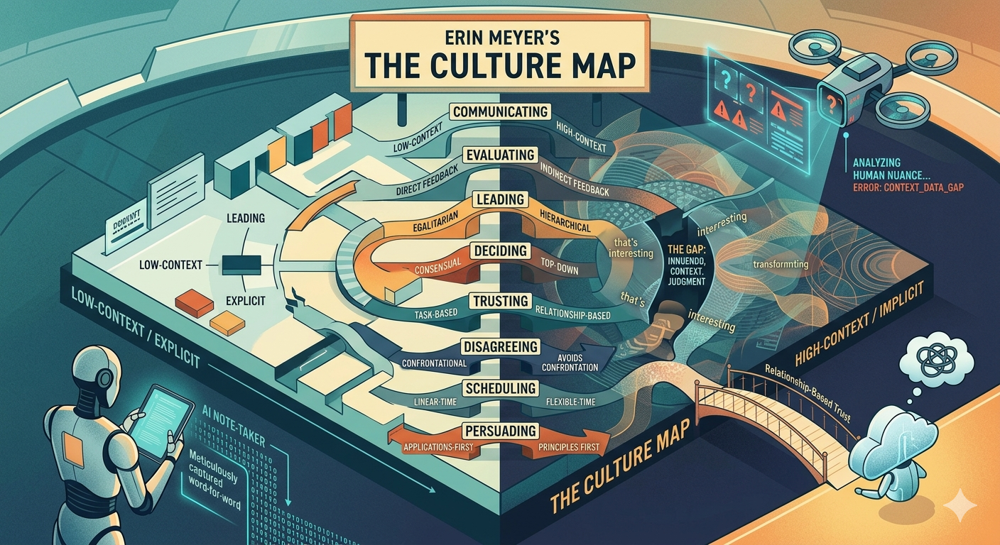

I need to re-read Erin Meyer

Not because the book got better. Because the world it was written for has changed significantly.
The Culture Map came out in 2014. I read it, learned a ton, and actually used a lot of it. Changed how I ran meetings across geographies. Changed how I gave feedback. Changed how I thought about trust with teams in different cultures. Some of the most practically useful stuff I've read in 23 years of cross-geo work.
Then Covid happened. Those organic moments where culture used to surface and get worked through didn't disappear - they just became rare. A long conversation with Loveleen at the airport waiting for a Hyderabad flight. Long walks with Ansuman or Pankaj when I was in the US. Those moments still happened. But you had to work for them. And most teams didn't.
Now AI is in the mix. And it's not a simple story. A few things I'm sitting with:
- Not everyone has the same exposure to AI tools - it depends on the kind of work you do, what your team is building, how deep in the technology stack you sit.
- AI is the most low-context communicator ever built. It generates explicit, structured, clear text - and strips out everything between the lines. Your Granola or Gemini note-taker will dutifully capture what was said. It will not capture the "that's interesting" that meant something else entirely. High-context teams have always communicated in that gap. That gap is quietly disappearing.
- The execution work is getting levelled - anyone can produce a decent document fast now. What you can't automate is judgment. Knowing which question to ask. Sensing when an output is subtly off. Understanding the human context behind a problem. That kind of deep contextual thinking is exactly what high-context cultures train people for. AI might quietly be shifting the advantage to the very people cross-geo teams always underestimated.
- AI-assisted writing is levelling the field in some ways - emails, documents, async communication. But in-person meetings are now something else entirely. People who sound perfectly aligned on paper walk into a room, and...
I'm going to re-read it. Cover to cover. I want to see what holds, what needs rethinking, and where the gaps are. I'll write about what I find.